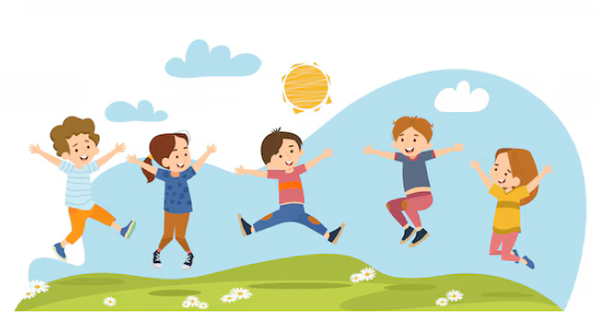

Run for Recovery
Supporting Eating Disorder Recovery Through Sports

Join Our Movement
Annual charity run supporting those affected by eating disorders. Together we can make a difference.
Register NowWhy Participate?
- Promote mental health through physical activity
- Help fund treatment programs for bulimia
- Raise awareness about eating disorders
- Join a supportive community of advocates
- Make a tangible difference in people's lives
Event Details
Date: June 15, 2025
Location: Riverfront Park, starting at 8:00 AM
Our charity run is more than just a sporting event - it's a powerful movement to change lives. All proceeds go directly to funding treatment programs, psychological support, and educational initiatives about eating disorders.
Learn More